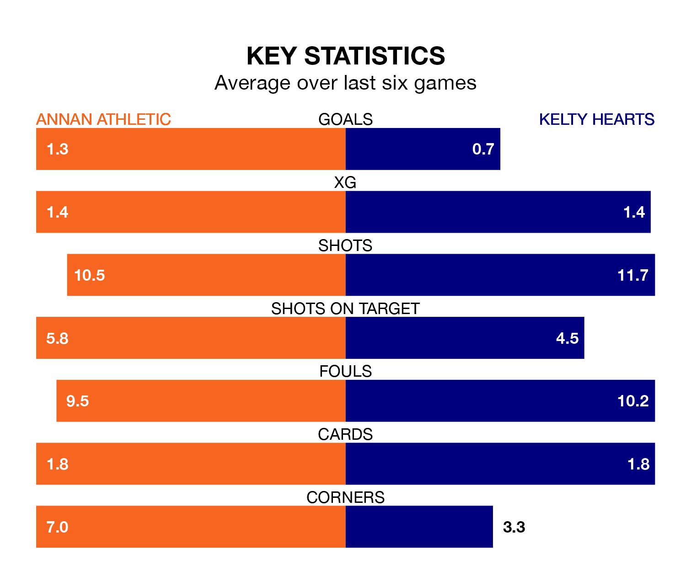

Kelty Hearts come to Galabank to play Annan Athletic on Saturday in poor form, having collected just three points from their last six games.
The visitors have won just one of their last six fixtures, while the Galabankies have two wins and two draws.
Annan are ninth in the table after 29 games, of which they have won six and drawn nine, earning 27 points.
Kelty Hearts are three places ahead of Athletic in sixth, with nine wins and seven draws putting them on 34 points.
In the last 10 years, Annan and Kelty Hearts have played each other on nine occasions. Annan won one of them, Kelty Hearts four, and they drew four times.
On average, the Galabankies scored 1.6 goals and Kelty Hearts 1.7 in those matches.
Their last meeting was on January 13, when they played out a 1-1 draw.
With 37 goals in 29 games so far this season, the away side are scoring at below the league average rate with 1.3 goals per game. And they are conceding more than average, letting in 50 goals at a rate of 1.7 per game.
The Galabankies are also below average scorers, with 1.4 goals per game, compared to a league average of 1.6. They have conceded 1.9 goals per game.
In Thomas Goss, the hosts have one of the league's most on-form strikers so far this season. He has notched nine goals in 25 appearances, to sit fifth in the scoring charts.
His goal rate of one every 219 minutes is slightly quicker than that of Alfie Bavidge, Kelty Hearts's top scorer with a goal every 236 minutes, and a total of seven goals in 19 games.
Annan's last match was on March 16, a 1-1 draw against Montrose, with Lewis Hunter getting the goal for the Galabankies.
Kelty Hearts beat Alloa Athletic 2-1 last time out, on Tuesday, with Joe McGlynn and Thomas O'Ware on the scoresheet.
Saturday's match will be refereed by Peter Stuart, who has taken charge of 11 League One games so far this season, issuing two red cards and booking 43 players. He has not awarded any penalties.
The last Annan game Stuart refereed was a 2-1 away loss to Queen of the South on December 30. His last Kelty Hearts match was their 1-0 loss at home against Falkirk on February 24.
Updated: 10:19 (UTC), 22/03/24